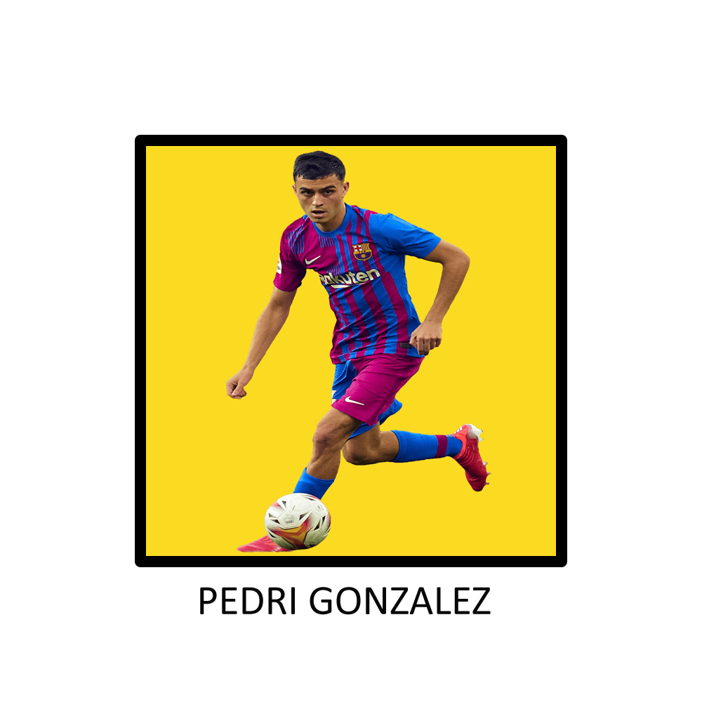
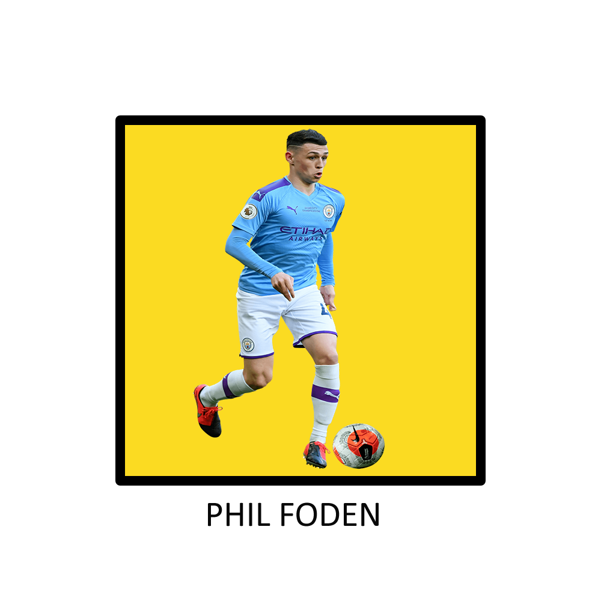
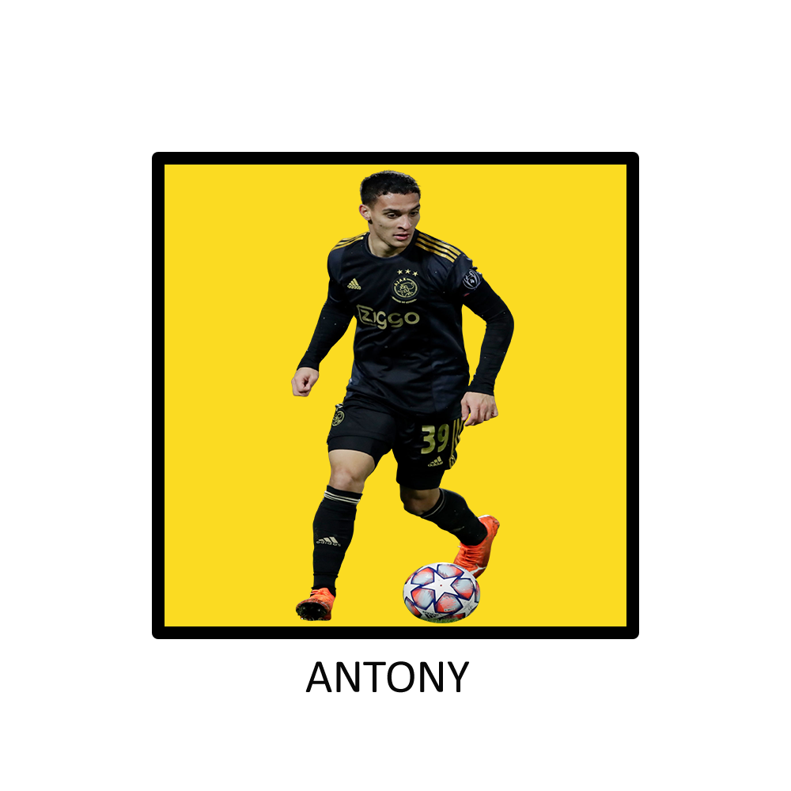
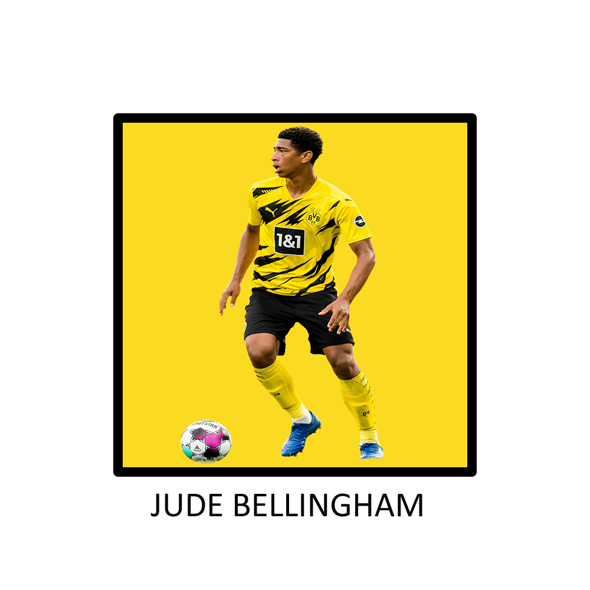
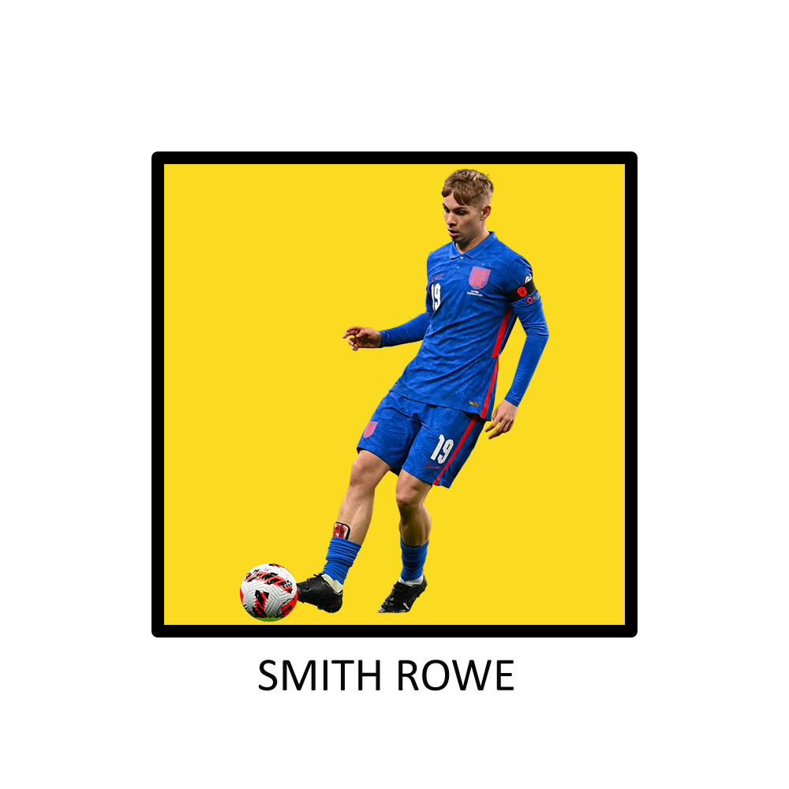

JUGADORES PROMESAS  Click aquí para ver a Pedri Para inaugurar la sección de jóvenes promesas, eligo por sobre cualquiera a Pedri, un crack y a mi parecer, el futuro iniesta y xavi si se quiere establecer un estilo de juego en concreto. Justamente fue elogiado y destacado por éste ultimo ex jugador, el cual lo definió como superlativo y que no era normal, lo cual coincido completamente debido a la calidad indiscutible que tiene Pedri, esa pausa y ese giro inesperado, cambiando la marcha de 0 a 100 en una milésima de segundos, y que decir sobre su control de pelota y pases tanto en corto como en largo. Es asombrosa la inteligencia que maneja en relación a tener la cancha tan en claro a su corta edad, siempre con la tranquilidad de saber qué y cómo está transcurriendo la jugada, y el posicionamiento de sus compañeros para luego generar una jugada totalmente inesperada de gol.PAUSA  Click aquí para ver a Foden Si hablamos de jugadores con velocidad pero con pura gambeta y calidad, tenemos que hablar del inglés del Manchester City. Es un placer ver jugar a Phil Foden con la pelota en sus pies, el traslado de la misma pegada a su zurda y el constante engaño que realiza con movimientos corporales para que el defensa no tenga ni una chance de interpretar su próxima decisión, es totalmente admirable. Un jugador que puede jugar tanto de enganche, como de extremo izquierdo o derecho, hasta de falso 9 sin ningun inconveniente. Otra característica destacable, es su constante búsqueda de espacios para filtrarse entre los defensores con total naturalidad para que lo habiliten sus compañeros. Definitivamente uno de los jugadores que más lejos va a llegar en las próximas dos décadas, un genio del fútbol.CREATIVIDAD  Click aquí para ver a Antony No me sorprende la cantidad de brasileros que aparecen en éste blog, por que por más que sea argentino, siempre fui un admirador del fútbol en éste país. No es la excepción de Antony, un jugador totalmente desequilibrante y ágil, velocidad pura y capaz de gambetear a dos o tres rivales con total facilidad y rapidez para luego definir al segundo palo con una soberbia tremenda. Según mi parecer, cuando de el salto a un equipo grande de Europa, va a ser más reconocido y destacado por la prensa, y a partir de aquí, Brasil va a tener un crack futbolístico por los próximos 15 años, que aunque obviamente le falte desarrollarse y madurar en varios aspectos relacionados al mundo del fútbol, tiene potencial para ser uno de los sucesores de tantos cracks brasileros destacados en el blog. DESEQUILIBRIO  Click aquí para ver a Bellingham Sin lugar a dudas, el inglés tiene un nivel actualmente a la altura de poder jugar en cualquier equipo europeo de mejor nivel ya sea el Barcelona, Real Madrid o Bayern Munich, un mago al estilo Riquelme o Zidane, un jugador con una creatividad sorprendente capaz de generar una opción de gol con un pase entre líneas. Puede que su característica principal no sea la velocidad en largo, pero claramente es uno de los jóvenes promesas que vi con más velocidad mental, teniendo en claro el panorama con la calidad suficiente para enganchar con una calidad tremenda, y huir de cualquier situación riesgosa de perder la pelota. Excelente quiebre de caderas por parte de Jude, dejando a cualquier fan de los volantes con la boca abierta cuando participa del juego.TÉCNICA  Click aquí para ver a Smith Rowe Si con años es el 10 del Arsenal, proyecten lo que puede lograr con 10 años más de carrera, un jugador muy completo, que no solamente es creativo, pasador, o regateador, si no que tiene buena pegada, se desmarca, corre para atrás para defender sin ningún problema y se entrega en un 100% por el equipo. Un futbolista muy completo a la hora de ser mediocampista, tanto ofensivo como central, con un dominio de pelota increíble y con una derecha capaz de clavarla al ángulo o centrar a la cabeza de un compañero. Sin lugar a dudas, una de las promesas mundiales con mayor proyección en el fútbol actual. CLASE Previous Next